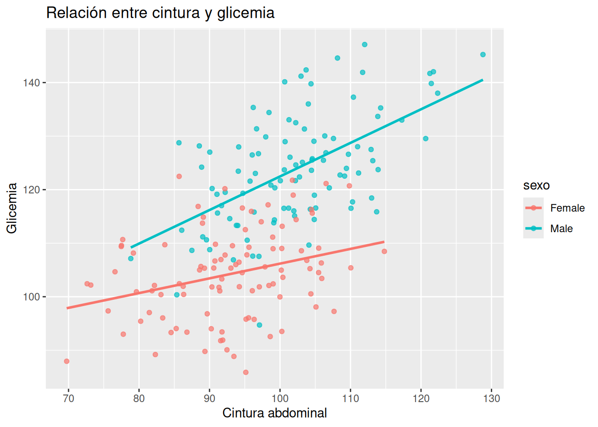
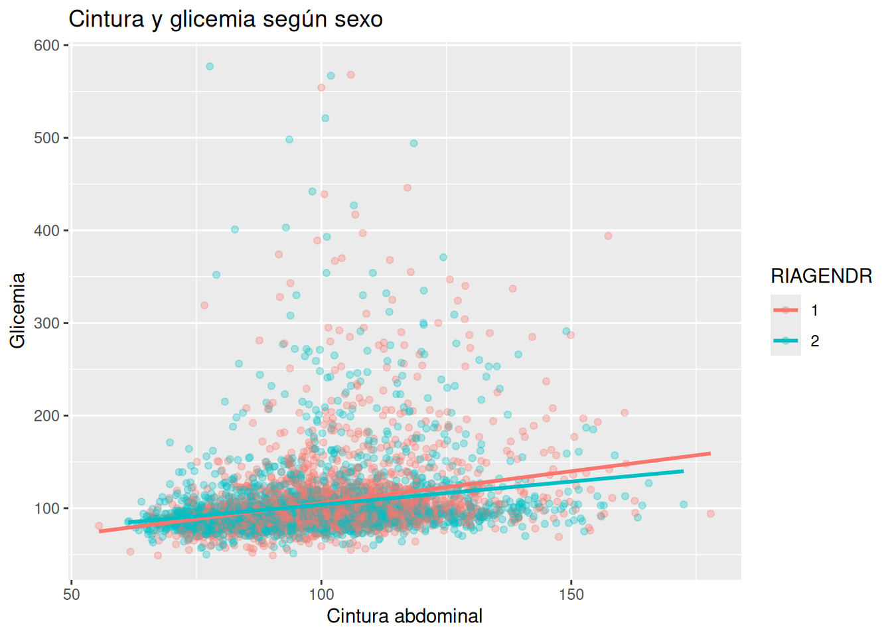
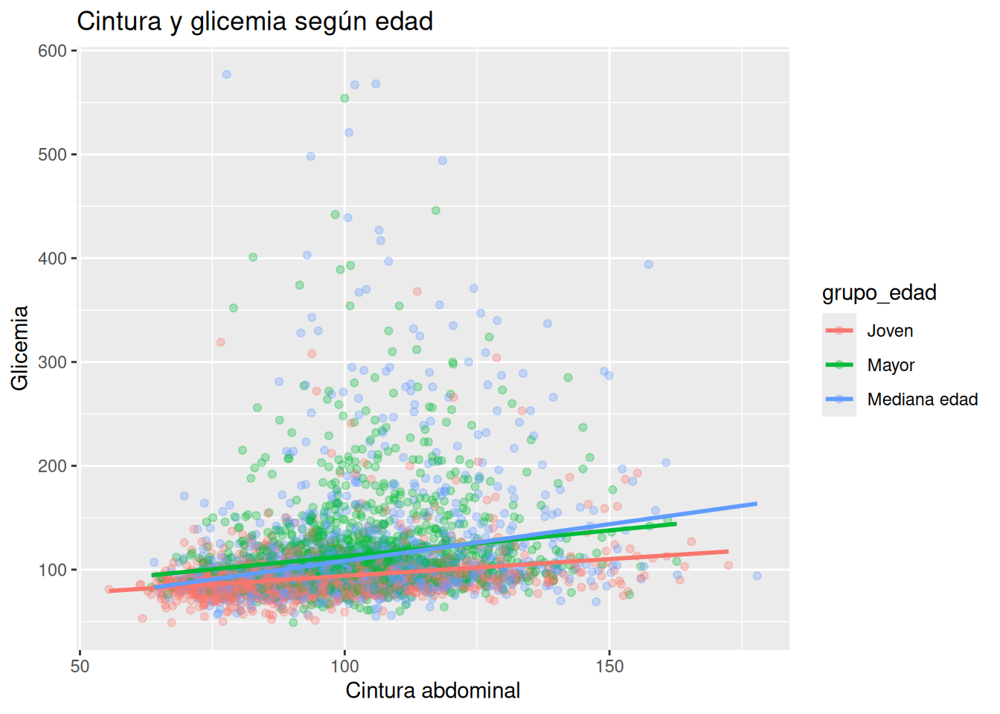

# Crear 200 pacientes
n <- 200
# Simular una dataset con las variables sexo, cintura y glicemia.
datos_sim <- tibble(
sexo = rep(c("Male", "Female"), each = n/2),
cintura = c(
rnorm(100, mean = 102, sd = 10),
rnorm(100, mean = 92, sd = 9)
)
) %>%
mutate(
glicemia = if_else(
sexo == "Male",
70 + cintura * 0.55 + rnorm(n, 0, 8),
72 + cintura * 0.35 + rnorm(n, 0, 8)
)
)17.- Modelos multinivel
1. Intuición (sin código)
Los pacientes no son iguales
Hasta ahora hemos construido modelos relativamente simples:
- cintura → glicemia
- IMC → presión arterial
- actividad física → obesidad
Y eso está bien para comenzar.
Pero en medicina aparece rápidamente un problema importante:
👉 los pacientes no responden igual.
Por ejemplo:
- una cintura elevada puede asociarse con glicemia alta en hombres y mujeres, pero no necesariamente con la misma intensidad
- el envejecimiento modifica el metabolismo
- algunos grupos tienen más inflamación basal
- ciertos medicamentos son más frecuentes en adultos mayores
En otras palabras:
👉 los datos tienen estructura.
¿Qué significa que los datos tengan estructura?
Imagina que analizamos 5000 personas de NHANES.
A primera vista parecen simplemente “5000 observaciones”.
Pero clínicamente sabemos que existen subgrupos:
- hombres y mujeres
- jóvenes y adultos mayores
- personas sedentarias y activas
- pacientes con y sin obesidad visceral
Eso significa que:
👉 las relaciones pueden cambiar según el grupo.
El problema de un único modelo global
Supongamos este modelo:
LBXSGL= β0 + β1(BMXWAIST)
La idea es simple:
- usar cintura para predecir glicemia
Pero este modelo asume algo muy fuerte:
👉 que la relación es igual para todos.
Clínicamente eso puede ser irreal.
Por ejemplo:
- hombres suelen acumular más grasa visceral
- mujeres premenopáusicas tienen cierto “protector metabólico”
- adultos mayores tienen mayor resistencia a la insulina
Entonces aparece una pregunta muy importante:
👉 ¿estamos ocultando diferencias clínicas importantes al promediar a todos juntos?
Modelo global vs modelos por grupos
Modelo global
Un único modelo para toda la población.
Ventaja:
- simple
- estable
- fácil de interpretar
Problema:
- puede ocultar heterogeneidad clínica
Modelos separados por grupo
Ahora imaginemos:
- un modelo para hombres
- otro para mujeres
Entonces comenzamos a ver:
- pendientes distintas
- incertidumbres distintas
- relaciones metabólicas distintas
Esto se parece más a la práctica clínica real.
Porque en medicina rara vez pensamos:
“todos los pacientes son iguales”.
Ejemplo clínico intuitivo
Imagina dos pacientes con la misma cintura abdominal:
- Hombre, 52 años
- Mujer, 25 años
¿Esperaríamos exactamente el mismo riesgo metabólico?
Probablemente no.
La edad, el sexo y el contexto hormonal cambian la interpretación clínica.
Eso es justamente lo que intentan capturar los modelos multinivel.
La idea intuitiva de “partial pooling”
Aquí aparece una idea extremadamente importante.
Imaginemos tres estrategias.
Estrategia 1 — Un único modelo global
Todos mezclados.
Problema:
- ignora diferencias reales
Estrategia 2 — Modelos completamente separados
Un modelo independiente para cada grupo.
Problema:
- algunos grupos tienen pocos datos
- pueden aparecer estimaciones exageradas o inestables
Estrategia 3 — Idea multinivel (“partial pooling”)
Aquí ocurre algo interesante:
👉 cada grupo tiene cierta libertad PERO
👉 también comparte información con los demás grupos.
Es como decir:
“sí, los grupos son diferentes… pero no completamente independientes”.
Analogía clínica
Imagina médicos residentes aprendiendo.
Cada residente desarrolla su propio criterio clínico.
Pero todos:
- comparten guías
- trabajan en el mismo hospital
- aprenden de casos similares
Entonces:
- no son idénticos
- pero tampoco completamente independientes
Eso es muy parecido al espíritu de los modelos multinivel.
Mensaje central del capítulo
👉 Promediar pacientes puede ocultar información importante.
Y por eso:
👉 los modelos deben respetar la heterogeneidad clínica.
2. Ejemplo simple (simulación en R)
Simulando diferencias entre hombres y mujeres
Vamos a crear un ejemplo sencillo.
La idea será:
- generar cinturas abdominales
- generar glicemia
- hacer que la relación sea distinta según el sexo
Crear datos simulados
Visualizar los datos
ggplot(datos_sim,
aes(x = cintura,
y = glicemia,
color = sexo)) +
geom_point(alpha = 0.7) +
geom_smooth(method = "lm",
se = FALSE) +
labs(
title = "Relación entre cintura y glicemia",
x = "Cintura abdominal",
y = "Glicemia"
)
¿Qué observamos?
Probablemente veremos:
- ambas relaciones son positivas
- pero la pendiente es distinta
En este ejemplo:
- la glicemia aumenta más rápido en hombres
- el efecto es más suave en mujeres
Interpretación intuitiva
Esto representa una idea clínica razonable:
👉 la misma cantidad de adiposidad abdominal no siempre implica el mismo riesgo metabólico.
Modelo global
Ahora ajustemos un único modelo.
# Crear modelo global sin tomar en cuenta el sexo
modelo_global <- stan_glm(
glicemia ~ cintura,
data = datos_sim,
chains = 2,
iter = 1000,
refresh = 0
)
# Pendiente del modelo global
posterior_interval(modelo_global) # produce: 5% 95%
(Intercept) 26.1462144 49.4236252
cintura 0.6630495 0.8986985
sigma 10.1027368 11.9242956¿Qué problema tiene?
El modelo obtiene:
👉 un promedio de ambas relaciones.
Eso puede ser útil…
pero también puede ocultar diferencias importantes.
Modelos separados por sexo
# Modelos separados por sexo
modelo_hombres <- stan_glm(
glicemia ~ cintura,
data = datos_sim %>%
filter(sexo == "Male"),
chains = 2,
iter = 1000,
refresh = 0
)
modelo_mujeres <- stan_glm(
glicemia ~ cintura,
data = datos_sim %>%
filter(sexo == "Female"),
chains = 2,
iter = 1000,
refresh = 0
)Comparar pendientes
posterior_interval(modelo_hombres) # produce: 5% 95%
(Intercept) 44.7276496 75.8257056
cintura 0.4747068 0.7721967
sigma 7.7933289 9.9017626posterior_interval(modelo_mujeres) # produce: 5% 95%
(Intercept) 65.3992596 90.4816337
cintura 0.1464879 0.4200225
sigma 7.1921237 9.1232150¿Qué comenzamos a notar?
Ahora aparecen:
- relaciones distintas
- incertidumbres distintas
- pendientes distintas
Y eso se parece mucho más a la medicina real.
3. Ejemplo aplicado con NHANES
Objetivo clínico
Queremos estudiar:
👉 cómo cambia la relación entre cintura abdominal y glicemia según el sexo.
Variables:
- Resultado:
- LBXSGL → glicemia
- Predictor:
- BMXWAIST → cintura abdominal
- Grupo:
- RIAGENDR → sexo
Preparar datos
# Seleccionar las variables que usaré
datos <- df_obesidad %>%
select(
LBXSGL, # Glicemia
BMXWAIST, # Cintura
RIAGENDR, # Género
RIDAGEYR, # Edad
) %>%
drop_na() %>%
filter( # Filtrar por valores coherentes
LBXSGL < 1000,
BMXWAIST < 200,
#RIAGENDR < 2
) %>%
mutate( # Cambiar el tipo la variable de género a factor
RIAGENDR = factor(RIAGENDR)
)Modelo global
# Modelo global
modelo_global <- stan_glm(
LBXSGL ~ BMXWAIST,
data = datos,
chains = 2,
iter = 1000,
refresh = 0
)
posterior_interval(modelo_global) # produce: 5% 95%
(Intercept) 40.760580 51.596614
BMXWAIST 0.531832 0.641378
sigma 38.600341 39.872321Interpretación
Este modelo responde:
👉 “¿qué ocurre en promedio en toda la población?”
Pero todavía ignora diferencias por sexo.
Modelo incluyendo sexo
# Modelo incluyendo sexo
modelo_sexo <- stan_glm(
LBXSGL ~ BMXWAIST + RIAGENDR,
data = datos,
chains = 2,
iter = 1000,
refresh = 0
)
posterior_interval(modelo_sexo) # produce: 5% 95%
(Intercept) 41.8468068 52.7347748
BMXWAIST 0.5309986 0.6333617
RIAGENDR2 -3.0413326 0.4640909
sigma 38.5538866 39.8834837¿Qué agrega este modelo?
Ahora el modelo reconoce:
👉 hombres y mujeres pueden tener glicemias basales distintas.
Pero todavía asume:
👉 que el efecto de la cintura es igual en ambos grupos.
Modelo con interacción
Ahora permitimos que la relación cambie según sexo.
# Modelo con interacción
modelo_interaccion <- stan_glm(
LBXSGL ~ BMXWAIST * RIAGENDR,
data = datos,
chains = 2,
iter = 1000,
refresh = 0
)
posterior_interval(modelo_interaccion) # produce: 5% 95%
(Intercept) 28.8094724 44.4962467
BMXWAIST 0.6112757 0.7674103
RIAGENDR2 6.8818203 28.3991281
BMXWAIST:RIAGENDR2 -0.2976918 -0.0867933
sigma 38.5548369 39.8147896Interpretación
Intercept es el promedio de glicemia del grupo base que, en nhanes, suele ser hombres (1 = male, 2 = female) cuando la cintura = 0; BMXWAIST dice que, por cada cm de cintura, la glicemia aumenta entre 0.60 y 0.76; BMXWAIST:RIAGENDR2 es la interacción que nos dice cual es la variación de la cintura en la glicemia de las mujeres en relación con los hombres, es decir si el centro de BMXWAIST es alrededor de 0.68 y el centro de BMXWAIST:RIAGENDR2 es alrededor de -0.18 el efecto de cada centímetro de cintura sobre la glicemia está alrededor de 50 (0.68 - 0.18). Sigma es la cantidad de glicemia que el modelo no puede explicar. RIAGENDR2 es cuánto cambia el intercepto de mujeres respecto al intercepto de los hombres, es decir el intercepto de mujeres sería igual al intercepto de hombres + RIAGENDR2.
Idea intuitiva de interacción
Este modelo pregunta:
👉 “¿la cintura afecta igual a hombres y mujeres?”
Y clínicamente esa es una pregunta muy importante.
Visualización sugerida
# Diagrama de dispersión que relaciona cintura con glicemia y
# coloreado por género dónde 1 es hombre y 2 mujer
ggplot(datos,
aes(x = BMXWAIST,
y = LBXSGL,
color = RIAGENDR)) +
geom_point(alpha = 0.3) +
geom_smooth(method = "lm",
se = FALSE) +
labs(
title = "Cintura y glicemia según sexo",
x = "Cintura abdominal",
y = "Glicemia"
)
Comparando modelos
Modelo global
- simple
- útil para visión general
Pero:
- puede ocultar diferencias importantes
Modelo por grupos
Permite observar:
- heterogeneidad clínica
- diferencias metabólicas
- distintos niveles de incertidumbre
Idea multinivel
Los modelos multinivel completos intentan lograr equilibrio entre:
- estabilidad del modelo global y
- flexibilidad de los modelos separados
Introducción intuitiva a edad como grupo
También podríamos estudiar:
- adultos jóvenes
- mediana edad
- adultos mayores
Porque el metabolismo cambia con el tiempo.
Ejemplo simple
# Categorizar la edad
datos <- datos %>%
mutate(
grupo_edad = case_when(
RIDAGEYR < 40 ~ "Joven",
RIDAGEYR < 60 ~ "Mediana edad",
TRUE ~ "Mayor"
)
)Modelo incluyendo edad
# Modelo incluyendo edad
modelo_edad <- stan_glm(
LBXSGL ~ BMXWAIST + grupo_edad,
data = datos,
chains = 2,
iter = 1000,
refresh = 0
)
posterior_interval(modelo_edad) # produce: 5% 95%
(Intercept) 40.5602834 50.7459460
BMXWAIST 0.4402569 0.5427374
grupo_edadMayor 15.6467096 20.0574525
grupo_edadMediana edad 11.3172693 15.6276583
sigma 37.8622464 39.1158919Modelo con interacción
# Modelo con interacción
modelo_interaccion <- stan_glm(
LBXSGL ~ BMXWAIST * grupo_edad,
data = datos,
chains = 2,
iter = 1000,
refresh = 0
)
posterior_interval(modelo_interaccion) # produce: 5% 95%
(Intercept) 53.42370559 69.1869795
BMXWAIST 0.24331723 0.4055727
grupo_edadMayor -11.43429933 15.1834985
grupo_edadMediana edad -36.97651406 -11.7262602
BMXWAIST:grupo_edadMayor 0.03814293 0.3022481
BMXWAIST:grupo_edadMediana edad 0.26100539 0.5102779
sigma 37.75062084 39.0081896Visualización
# Diagrama de dispersión que relaciona la cintura con la glicemia
# coloreado por grupo de edad
ggplot(datos,
aes(x = BMXWAIST,
y = LBXSGL,
color = grupo_edad)) +
geom_point(alpha = 0.3) +
geom_smooth(method = "lm",
se = FALSE) +
labs(
title = "Cintura y glicemia según edad",
x = "Cintura abdominal",
y = "Glicemia"
)
Idea clínica importante
Con la edad pueden cambiar:
- inflamación crónica
- uso de medicamentos
- sensibilidad a la insulina
- composición corporal
Entonces nuevamente:
👉 un único promedio puede ser engañoso.
4. Interpretación clínica
Lo que este capítulo realmente enseña
Más allá de la estadística, este capítulo transmite una idea profundamente clínica:
👉 los pacientes son heterogéneos.
Relación con obesidad e inflamación
La obesidad no es una condición uniforme.
Dos personas con el mismo IMC pueden tener:
- distinta grasa visceral
- distinta inflamación
- distinta resistencia a la insulina
- distinto riesgo cardiovascular
Por eso:
👉 analizar subgrupos mejora la comprensión clínica.
Sexo y metabolismo
Las diferencias por sexo pueden reflejar:
- distribución distinta de grasa
- diferencias hormonales
- distinta adiposidad visceral
- distinta respuesta inflamatoria
Edad y metabolismo
Con el envejecimiento aparecen cambios como:
- sarcopenia
- menor sensibilidad a la insulina
- aumento de medicamentos
- inflamación de bajo grado
Todo eso modifica las relaciones metabólicas.
El peligro de promediar demasiado
Un promedio poblacional puede ser útil.
Pero también puede:
- esconder pacientes de alto riesgo
- diluir asociaciones importantes
- simplificar excesivamente la realidad clínica
Insight clave del capítulo
👉 “Promediar pacientes puede ocultar información importante”.
Qué aporta el pensamiento multinivel
Aunque todavía no hemos construido modelos jerárquicos reales, ya aprendimos algo fundamental:
👉 los datos médicos tienen estructura.
Y por eso:
👉 los modelos deben respetar la heterogeneidad clínica.
Conexión con pensamiento bayesiano
El enfoque bayesiano es especialmente útil aquí porque:
- trabaja naturalmente con incertidumbre
- permite modelar diferencias entre grupos
- evita pensar en estimaciones rígidas y únicas
En lugar de preguntar:
“¿cuál es el efecto exacto?”
comenzamos a pensar:
“¿qué rango de efectos es plausible en distintos grupos?”
Ejercicios
1. El problema del promedio
Imagina que analizas:
- cintura abdominal
- glicemia
en toda la población mezclada.
Preguntas
- ¿Qué información clínica podría ocultarse?
- ¿Por qué hombres y mujeres podrían comportarse distinto?
- ¿Por qué la edad podría modificar la relación?
2. Variables proxy
Reflexiona sobre esta frase:
“La cintura no mide exclusivamente grasa visceral”.
Preguntas
- ¿Qué otras cosas podría estar capturando la cintura?
- ¿Por qué la misma cintura podría representar distinto riesgo según sexo?
- ¿Qué limitaciones clínicas tiene usar IMC o cintura como proxy metabólico?
3. Pensamiento clínico sobre interacciones
Explica con palabras simples:
👉 ¿Qué significa una interacción positiva?
👉 ¿Qué significa una interacción negativa?
4. Analogía clínica
Piensa en un medicamento antihipertensivo.
Pregunta
¿Por qué sería razonable esperar que el efecto del medicamento cambie según:
- edad
- sexo
- obesidad
- actividad física
?
👉 Describe esto usando la idea intuitiva de interacción.
5. Modelo global vs modelos separados
Construye:
# Modelo global
modelo_global <- stan_glm(
LBXSGL ~ BMXWAIST,
data = datos,
chains = 2,
iter = 1000,
refresh = 0
)
posterior_interval(modelo_global) # produce: 5% 95%
(Intercept) 40.7353329 51.5790733
BMXWAIST 0.5330324 0.6396666
sigma 38.5558582 39.8124399Luego crea modelos separados por sexo.
modelo_hombres <- stan_glm(
LBXSGL ~ BMXWAIST,
data = datos %>%
filter(RIAGENDR == "1"),
chains = 2,
iter = 1000,
refresh = 0
)
modelo_mujeres <- stan_glm(
LBXSGL ~ BMXWAIST,
data = datos %>%
filter(RIAGENDR == "2"),
chains = 2,
iter = 1000,
refresh = 0
)posterior_interval(modelo_hombres) # produce: 5% 95%
(Intercept) 28.6315084 44.9654467
BMXWAIST 0.6067577 0.7676314
sigma 38.2197320 39.9126285posterior_interval(modelo_mujeres) # produce: 5% 95%
(Intercept) 47.2810074 61.1132252
BMXWAIST 0.4266229 0.5668543
sigma 38.4317162 40.2025163Preguntas
- ¿Las pendientes son parecidas?
- ¿La incertidumbre cambia?
- ¿Qué grupo tiene mayor variabilidad?
6. Modelo con interacción por sexo
Construye:
# Modelo con interacción
modelo_interaccion <- stan_glm(
LBXSGL ~ BMXWAIST * RIAGENDR,
data = datos,
chains = 2,
iter = 1000,
refresh = 0
)
posterior_interval(modelo_interaccion) # produce: 5% 95%
(Intercept) 28.7240041 45.26050841
BMXWAIST 0.6048976 0.76384759
RIAGENDR2 7.4443630 28.42569042
BMXWAIST:RIAGENDR2 -0.3010706 -0.08854699
sigma 38.5452663 39.82296011Preguntas
- ¿La interacción parece positiva o negativa?
- ¿Qué significa clínicamente? 3.¿La cintura parece afectar más a hombres o mujeres?
7. Visualización de interacción
Haz un gráfico con:
- cintura
- glicemia
- color por sexo
y agrega líneas de regresión.
Preguntas
- ¿Las pendientes parecen distintas?
- ¿Las líneas son paralelas?
- ¿El gráfico coincide con el modelo?
8. Interacción con edad
Crea grupos:
# Categorizar la edad
datos <- datos %>%
mutate(
grupo_edad = case_when(
RIDAGEYR < 40 ~ "Joven",
RIDAGEYR < 60 ~ "Mediana edad",
TRUE ~ "Mayor"
)
)Luego:
# Modelo con interacción
modelo_interaccion <- stan_glm(
LBXSGL ~ BMXWAIST * grupo_edad,
data = datos,
chains = 2,
iter = 1000,
refresh = 0
)
posterior_interval(modelo_interaccion) # produce: 5% 95%
(Intercept) 53.73831619 69.1864530
BMXWAIST 0.24317759 0.4052726
grupo_edadMayor -12.28940302 16.0350470
grupo_edadMediana edad -36.26377818 -11.6114051
BMXWAIST:grupo_edadMayor 0.02893085 0.3069350
BMXWAIST:grupo_edadMediana edad 0.25365680 0.5075460
sigma 37.81523280 38.9990880# Diagrama de dispersión que relaciona la cintura con la glicemia
# coloreado por grupo de edad
ggplot(datos,
aes(x = BMXWAIST,
y = LBXSGL,
color = grupo_edad)) +
geom_point(alpha = 0.3) +
geom_smooth(method = "lm",
se = FALSE) +
labs(
title = "Cintura y glicemia según edad",
x = "Cintura abdominal",
y = "Glicemia"
)
Preguntas
- ¿Qué grupo tiene mayor pendiente?
- ¿El resultado coincide con tu intuición clínica?
- ¿Qué explicaciones fisiopatológicas podrían existir?
9. Pensar como epidemiólogo
Supón que los adultos mayores tienen menor pendiente que mediana edad.
Preguntas
- ¿Podría existir sesgo de supervivencia?
- ¿Qué papel podrían tener los medicamentos?
- ¿Por qué los adultos mayores de NHANES no representan necesariamente a todos los adultos mayores?
10. Inflamación y distribución de grasa
Reflexiona sobre esta idea:
“La grasa subcutánea puede ser metabólicamente menos dañina que la visceral”.
Preguntas
- ¿Por qué?
- ¿Cómo se relaciona esto con resistencia a la insulina?
- ¿Cómo podría afectar la interpretación de la cintura abdominal?
11. Pensar en incertidumbre
Observa un intervalo posterior amplio.
Preguntas
- ¿Qué significa clínicamente?
- ¿Implica que “no hay efecto”?
- ¿Qué tipos de incertidumbre pueden existir en medicina?
12. Comparar modelos
Compara mentalmente:
Modelo A
LBXSGL ~ BMXWAIST
Modelo B
LBXSGL ~ BMXWAIST * RIAGENDR
Preguntas
- ¿Qué complejidad agrega el modelo B?
- ¿Qué información clínica extra obtiene?
- ¿Qué riesgos existen al usar solo el modelo A?
13. Buscar otras interacciones plausibles
Piensa en variables NHANES donde podría existir interacción.
Ejemplos:
- actividad física × obesidad
- edad × HDL
- sexo × triglicéridos
- cintura × aspirina
- diabetes × inflamación
Pregunta
👉 ¿Por qué sería razonable esperar que el efecto cambie según el grupo?
14. Tu propia hipótesis clínica
Propón una hipótesis basada en obesidad.
Ejemplo:
“La actividad física podría reducir más la glicemia en personas jóvenes que en adultos mayores”.
Luego:
- plantea el modelo
- explica la interacción esperada
- justifica fisiopatológicamente
15. Reflexión final
Explica con tus propias palabras:
👉 ¿Por qué “promediar pacientes” puede ser peligroso en medicina?
Y luego responde:
👉 ¿Cómo ayudan las interacciones a respetar la heterogeneidad clínica?